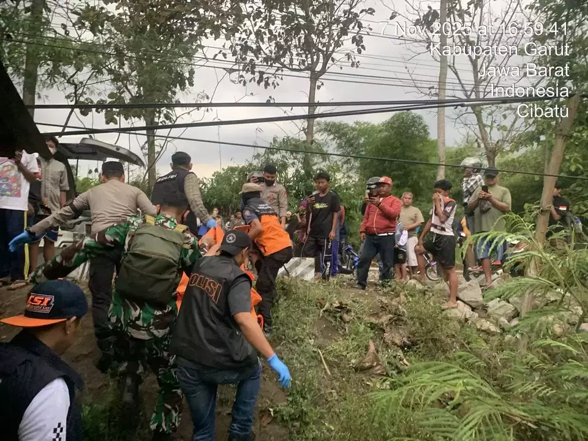

Ilustrasi Foto 1: Rumah sederhana di pedesaan Jawa Barat pada malam hari. (Sumber: Pexels)
Kronologi Kejadian
Leuwigoong, Cibatu – Seorang pria berinisial AS (45), warga RT 03/RW 07, Desa Leuwigoong, Kecamatan Cibatu, Kabupaten Garut, ditemukan tewas gantung diri di kamar tidurnya pada Rabu malam, 12 November 2025 pukul 21.15 WIB.
Korban ditemukan oleh istrinya, Siti (40), yang baru pulang dari kegiatan posyandu. Saat tiba, pintu kamar terkunci dari dalam. Setelah dibuka paksa, AS sudah tak bernyawa dengan tali jemuran melilit lehernya, tergantung pada kusen jendela.
"Saya langsung teriak minta tolong. Suami saya sudah dingin, tali masih terikat kuat di lehernya..."

Ilustrasi Foto 2: Tali jemuran terikat di dinding tua — mirip alat yang digunakan korban. (Sumber: Pexels)
Dugaan Penyebab
Polsek Cibatu yang tiba di TKP tidak menemukan tanda kekerasan. Dugaan sementara: depresi berat akibat utang dan kehilangan pekerjaan.
- Utang pinjol Rp 28 juta
- Keyakinan diri menurun sejak pandemi
- Tidak ada surat wasiat
Tanggapan Pemerintah Desa
Kepala Desa Leuwigoong, H. Ujang Suryana, menyatakan akan membentuk posko kesehatan jiwa darurat dan menggandeng Puskesmas Cibatu untuk konseling gratis.
Berita Terkait
Kasus Bunuh Diri di Jabar Naik 38% Tahun Ini
12 Nov 2025Pemkab Garut Luncurkan Layanan Konseling 24 Jam
11 Nov 2025Hot News
- Longsor Tutup Jalan Garut-Tasik
- Pemkab Salurkan 500 Paket Sembako
- Polisi Tangkap Bandar Sabu di Wanaraja
Malam sunyi di desa Jawa Barat. Nuansa gelap mendominasi.